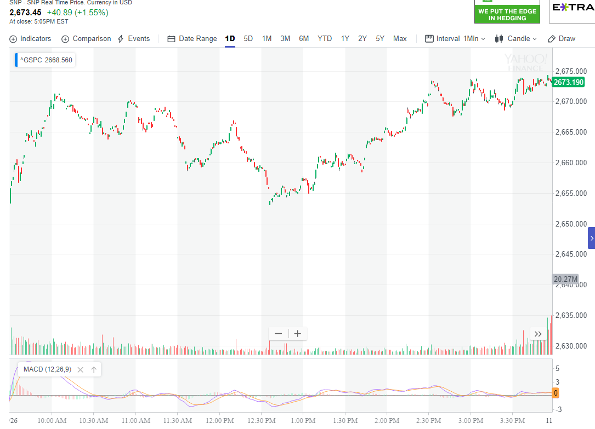

前进中不断的拉回，然后走平后再次运动，幅度虽然很小，但是也反转了。
- 这个要和积累走势区别，这个会出现大幅拉回，再次前进，每次都是如此。而积累走势，则会出现一段时间的走平。然后突然爆发。

图示：
开盘后，震荡下跌，然后不再震荡，而是走平下跌。这样就反转了。

图示:开盘后上涨，不断拉回，但是到了后面，它拉回幅度很小，逐渐增强。
下来的时候，走平很久。这样也会下跌积累了动力。

图示：开盘后，上涨，处于升势。10：10快速拉回。然后开始继续上涨，它上涨的时候，
不断的拉回。在创新高后，走平，继续走高。这样就完成了转折。

图示：开盘后，冲高，大幅拉回，再次冲高，基本走平后，再次冲高。这样就完成了加速走势，形成了
转折。但是这个转折也是部分转折。第一浪并没有被转折。12：30低于第二浪后，开始上涨。

图示：
1. 开盘后，缓慢走低，快速上涨后，出现了5浪上涨走势.这个本身也说明了一定是跌势。
2. 5浪上涨本身，其实就是一个冲高，拉回，再次冲高，走平，再次冲高，形成了加速的走势。10：00拉回幅度很大，
而10：30的拉回就小很多，再次上涨，形成了加速。